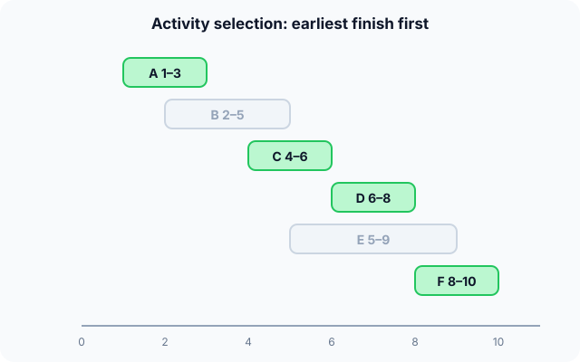

Prerequisites
- Sorting.
- The idea of an optimal solution.
- Intervals: start and end times.
The analogy
Everyday analogy
Think of packing a bag for a trip by always grabbing the most useful item that still fits. You never unpack to reconsider.
That's greedy: each step takes the locally best option. It works brilliantly for some problems (like choosing talks by earliest finish) and fails for others, where an early grab blocks a better combination.
How it works
When greedy works: the problem must have the greedy-choice property (some optimal solution starts with the greedy choice) and optimal substructure (the rest is again an optimal solution of a smaller problem).
Start with activity selection by hand
Talks sorted by end time: A 1–3, B 2–5, C 4–6, D 6–8, E 5–9, F 8–10. Keep a talk if it starts no earlier than the last kept talk ends. Predict, then open "Check".
Example: predict before you read
Step 1. Pick the first talk. Predict which, and why it is safe.
Check
A (ends at 3, the earliest). Finishing first leaves the most room for everything else.
Step 2. Cover the next line and guess: after A, check B and C.
Check
B starts at 2, before A ends: skip. C starts at 4 ≥ 3: keep C (ends at 6).
Step 3. Continue with D, E, F. Predict the final selection.
Check
D starts at 6 ≥ 6: keep (ends 8). E starts at 5: skip. F starts at 8 ≥ 8: keep. Selected A, C, D, F: 4 talks.

Quick recall: Before reading further, cover the text above and say out loud: why choose the talk that finishes first rather than the one that starts first?
Check your answer
An early start can still end late and block many talks; ending first always leaves the most time for the rest.
Finish the picture: when greedy fails
Make change for 6 with coins {1, 3, 4}, greedily taking the biggest coin that fits.
- The greedy answer. Predict the coins.
Check
4, then 1, then 1: three coins.
- The best answer. Predict it, and say what greedy got wrong.
Check
3 + 3: two coins. Taking 4 first looked best but left 2, which only 1s can pay. Greedy never reconsiders, so it can't recover.
Quick recall: Without scrolling up, say out loud: why does greedy fail for coins {1, 3, 4} and amount 6?
Check your answer
It takes the biggest coin, 4, then 1 + 1: three coins. But 3 + 3 uses only two. The first greedy choice blocked the best combination.
The rule in plain words
Sort or order the candidates by a greedy rule (here: earliest finish). Go through them once; take each candidate that keeps the solution valid and never undo a choice.
Before trusting it, prove the rule is safe (an exchange argument) or test it against counter-examples.
Quick recall: Before you read the code, write the activity-selection loop in your own words. Then check below.
Check your answer
Go through the talks in order of end time. If a talk starts at or after the end of the last kept talk, keep it and remember its end time; otherwise skip it.
The code
Read this code after you have selected the talks by hand. It will make more sense.
int select_activities(int start[], int end[], int n, int chosen[]) { /* sorted by end */
int k = 0, last_end = -1;
for (int i = 0; i < n; i++)
if (start[i] >= last_end) { /* fits after the last kept talk */
chosen[k++] = i;
last_end = end[i]; /* earliest finish so far */
}
return k; /* how many talks were kept */
}Definition
What you just did, in one line: a greedy algorithm builds a solution step by step, always taking the choice that looks best right now and never revising it.
flowchart TD
A["sort talks by end time"] --> B["take the next talk"]
B --> C{"starts after the last kept talk ends?"}
C -->|yes| D["keep it, update last end"]
C -->|no| E["skip it"]
D --> F{"more talks?"}
E --> F
F -->|yes| B
F -->|no| G["done: maximum number of talks"]
How fast is it?
Quick recall: Before looking at the formula, predict: which step dominates the running time?
Check your answer
Sorting by end time: $O(n \log n)$. The selection pass is $O(n)$.
Sorting the $n$ talks dominates; the selection itself is one pass:
$$O(n \log n)_{\text{sort}} + O(n)_{\text{scan}} \;=\; O(n \log n)$$| Problem | Greedy rule | Optimal? |
|---|---|---|
| Activity selection | Earliest finish time | Yes |
| Fractional knapsack | Best value per kg first | Yes |
| Minimum spanning tree | Cheapest safe edge (Kruskal, Prim) | Yes |
| Shortest paths, weights ≥ 0 | Closest vertex (Dijkstra) | Yes |
| Coins {1, 5, 10, 25} | Biggest coin | Yes |
| Coins {1, 3, 4} | Biggest coin | No |
| 0/1 knapsack | Best value per kg | No |
Warning
A greedy rule that seems obvious can be wrong. "Shortest talk first" fails: talks 1–5, 5–9 and a short talk 4–6 give one talk instead of two. Always check with a proof or a counter-example.
Exam tip
To prove a greedy choice is safe, use an exchange argument: take any optimal solution, swap its first choice for the greedy choice, and show it's still valid and no worse.
Common mistakes
- Assuming greedy is optimal without a proof.
- Sorting by the wrong key (start time or duration instead of end time).
- Using greedy for 0/1 knapsack or arbitrary coin systems, where dynamic programming is needed.
Try it yourself
Exercise 1 (warm-up)
Talks: 1–4, 3–5, 0–6, 5–7, 3–9, 5–9, 6–10, 8–11. Select the maximum number with the earliest-finish rule.
Hint
Sort by end time first.
Answer
1–4, then 5–7, then 8–11: 3 talks.
Exercise 2 (a bit harder)
Fractional knapsack, capacity 50 kg: items (60 € for 10 kg), (100 € for 20 kg), (120 € for 30 kg). What does greedy by value per kg give, and why would the same rule fail if items couldn't be split? Write your answer down before you open it.
Show answer
Ratios 6, 5, 4 €/kg. Take all of items 1 and 2 (30 kg, 160 €) and 20 kg of item 3 (80 €): 240 €. If items can't be split, greedy takes items 1 and 2 (160 €) and item 3 doesn't fit, but items 2 and 3 give 220 €, which is better.
Did you know?
Did you know?
Huffman coding, used inside ZIP files, JPEG and MP3, is a greedy algorithm: it repeatedly merges the two least frequent symbols, and that is provably optimal.
Cashiers in most countries use greedy change-making, which is optimal for the usual coin systems; designing coin systems where greedy fails is a classic puzzle.
Key points to remember
If you remember one thing from each line, remember the because.
- Greedy is fast because it makes one pass without ever backtracking.
- Earliest finish is safe because it leaves the most time for the remaining talks.
- Greedy can fail because a choice that looks best now can block a better combination later.
- A proof is needed because correctness depends on the greedy-choice property, which many problems lack.
- Sorting usually dominates because the selection pass itself is linear.
Self-check questions
Answer these in order, out loud. They follow the page, so your answers become the script of your video.
- How is a greedy algorithm like packing a bag by always grabbing the most useful thing that fits?
Sample answer
Each step takes the locally best option and never reconsiders, which is fast but can miss a better overall combination.
- Walk through activity selection on A 1–3, B 2–5, C 4–6, D 6–8, E 5–9, F 8–10.
Sample answer
Keep A; skip B (starts at 2); keep C; keep D; skip E (starts at 5); keep F. Four talks: A, C, D, F.
- Why does the code compare
start[i] >= last_end?A good answer says what
last_endholds.Sample answer
last_endis when the last kept talk ends; a talk starting at or after it doesn't overlap, so it can be kept. - So what is a greedy algorithm, in one sentence?
Sample answer
An algorithm that builds a solution step by step by always taking the locally best choice and never revising it.
- Why is "earliest finish first" optimal for activity selection?
A good answer uses an exchange argument.
Sample answer
Take any optimal schedule and replace its first talk with the earliest-finishing one: it ends no later, so it can't clash with the rest. Repeating the argument shows greedy keeps as many talks.
- What does activity selection cost?
Sample answer
$O(n \log n)$ for sorting by end time, plus $O(n)$ for the selection pass.
- Give a problem where greedy fails, and what to use instead.
Sample answer
Change for 6 with coins {1, 3, 4}: greedy gives 4 + 1 + 1, the best is 3 + 3. Dynamic programming finds the true optimum.
- If you had to teach this to a friend in 2 minutes, what would you leave out, and why?
Sample answer
I'd leave out the formal properties and fractional knapsack. I'd keep the bag analogy, the talk-scheduling example, the coin counter-example, and "fast, but only optimal when you can prove it".
External resources
- GeeksforGeeks: Activity selection: the problem, proof and code.
- Wikipedia: Greedy algorithm: when greedy works and classic failures.
- MIT OCW 6.046J Design and Analysis of Algorithms: lectures on greedy algorithms and their proofs.
Videos
- YouTube search: greedy activity selection: pick a walkthrough with a timeline.